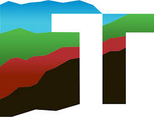

I am a MS student in the CEE Department at the University of Washington. I hold a BS degree in Geological Engineering from the Universidad Nacional de Colombia, with 5+ years of industry experience. Passionate about geospatial data, GIS, remote sensing and geotechnical engineering, I excel in both autonomous and team-based learning environments. With outstanding interpersonal, written, and communication skills, I am adaptable to change and committed to continuous improvement. My creative and innovative mindset is focused on problem-solving, particularly within the realms of geospatial analysis, data engineering, geophysics, geotechnical engineering, and risk management. In addition to my academic and professional pursuits, I have a love for football, both as a player and a fan.
Research Assistant and Scientist(August 2023 - Present) |
University of Washington |
Geotechnical Intern(June 2024 - September 2024) |
Terracon Consultants Inc  |
Geotechnical Monitoring Analyst(July 2021 - August 2023) |
Hexagon Geospatial |
Geological Engineer(January 2019 - July 2021) |
South32 |
Research Assistant and Scientist(August 2017 - March 2018) |
UNALMED |
|
|